Aplikasi mobile hampir selalu menampilkan banyak data dalam bentuk daftar dan gambar. Di Flutter, data berulang ditampilkan menggunakan ListView.builder yang menyusun item dalam satu kolom ke bawah, atau GridView.builder yang menyusun item dalam beberapa kolom dengan pengaturan gridDelegate (jumlah kolom, jarak antar item, dan rasio ukuran). Keduanya bersifat lazy, yaitu item baru dibuat ketika dibutuhkan sehingga hemat memory walaupun datanya banyak.
Untuk gambar, Flutter menyediakan dua sumber utama. Image.asset mengambil gambar dari dalam project yang ikut ter-bundle ke aplikasi sehingga langsung tersedia tanpa koneksi dan perlu didaftarkan di pubspec.yaml. Sebaliknya Image.network mengambil gambar dari URL di internet, sehingga wajib dilengkapi loading state dan error state karena koneksi dapat lambat atau terputus. Pada praktikum ini, project ResepKu dari Praktikum 6 dikembangkan dengan menambahkan logo, gambar placeholder, dan font Poppins, menampilkan foto resep dari cdn.dummyjson.com, serta membuat tampilan list dan grid yang dapat dipilih dengan satu tombol. State tampilan list atau grid cukup dikelola dengan setState karena hanya dibutuhkan satu halaman, sedangkan fitur favorit dari Provider tetap berfungsi di semua tampilan.
pubspec.yaml, lalu menggunakannya dengan Image.asset dan ThemeData.Image.network beserta loading state dan error state.ListView.builder dan GridView.builder.setState) tanpa mengganggu state favorit di Provider.resepku dari Praktikum 6logo.png, placeholder.png, dan font Poppins (Regular, Medium, Bold)cdn.dummyjson.com)Di folder utama project (sejajar dengan folder lib, bukan di dalamnya) dibuat folder assets beserta dua subfolder, yaitu images untuk gambar dan fonts untuk font. File logo.png dan placeholder.png disalin ke assets/images, sedangkan Poppins-Regular.ttf, Poppins-Medium.ttf, dan Poppins-Bold.ttf disalin ke assets/fonts dengan nama file yang persis sama, termasuk huruf besar dan kecil.
mkdir assets
mkdir assets/images
mkdir assets/fontsAsset dan font kemudian didaftarkan pada bagian flutter: di pubspec.yaml agar ikut dimasukkan ke aplikasi saat build.
flutter:
uses-material-design: true
assets:
- assets/images/
fonts:
- family: Poppins
fonts:
- asset: assets/fonts/Poppins-Regular.ttf
- asset: assets/fonts/Poppins-Medium.ttf
weight: 500
- asset: assets/fonts/Poppins-Bold.ttf
weight: 700assets/images/ — Mendaftarkan seluruh file di folder tersebut. Tanda / di akhir berarti satu folder, sehingga file baru di folder itu tidak perlu didaftarkan satu per satu.family: Poppins — Nama font yang dipakai di kode. Harus sama persis dengan nilai fontFamily di ThemeData.weight: 500 dan weight: 700 — Ketebalan huruf untuk setiap file. File tanpa weight dianggap normal (400), sehingga teks tebal memakai file dengan weight 700.assets: dan fonts: harus sejajar dengan uses-material-design:, karena salah satu spasi saja menimbulkan error saat flutter pub get.Pada lib/main.dart, properti fontFamily: 'Poppins' ditambahkan pada theme dan darkTheme di MaterialApp sehingga seluruh teks aplikasi memakai font Poppins pada mode terang maupun gelap. Parameter themeMode dan builder untuk footer identitas dari Praktikum 6 tidak dihapus.
theme: ThemeData(
colorSchemeSeed: Colors.deepOrange,
fontFamily: 'Poppins', // didaftarkan di pubspec.yaml
),
darkTheme: ThemeData(
colorSchemeSeed: Colors.deepOrange,
brightness: Brightness.dark,
fontFamily: 'Poppins',
),
themeMode: context.watch<ThemeProvider>().themeMode, // dari Latihan 1 Modul 6Pada lib/pages/home_page.dart, parameter title pada AppBar diganti menjadi Row berisi Image.asset('assets/images/logo.png', height: 32) untuk menampilkan logo dari asset, SizedBox(width: 8) sebagai jarak, dan teks "ResepKu". Karena asset dan font baru dimasukkan saat build, aplikasi dihentikan lalu dijalankan ulang dengan flutter run, bukan hanya hot reload atau hot restart.
title: Row(
children: [
Image.asset('assets/images/logo.png', height: 32),
const SizedBox(width: 8),
const Text('ResepKu'),
],
),Checkpoint 1: Home dengan logo di AppBar dan seluruh teks memakai font Poppins. Footer NIM dan nama terlihat pada screenshot.
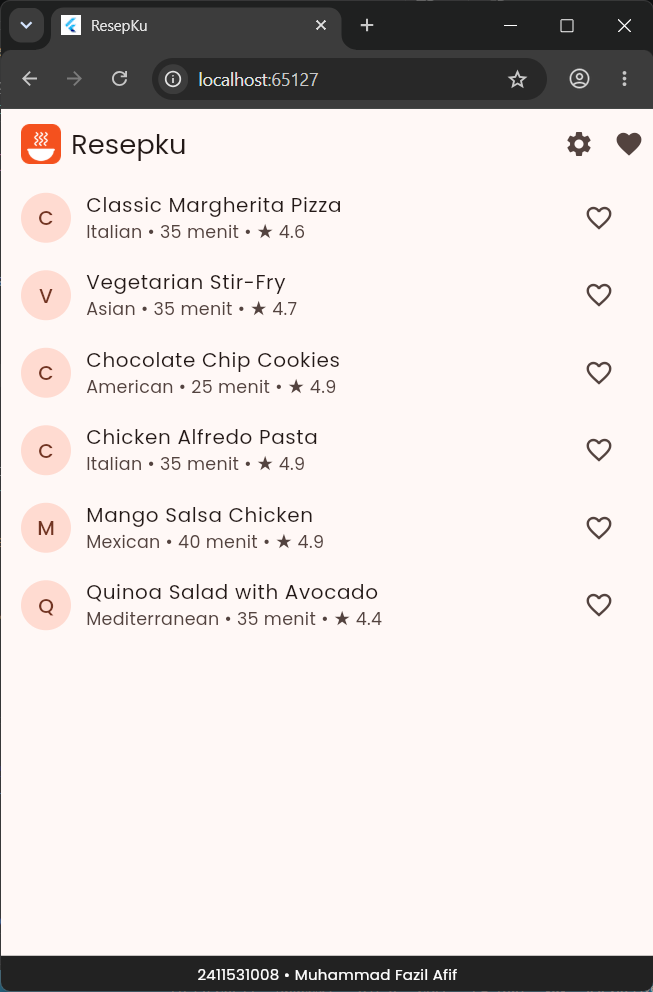
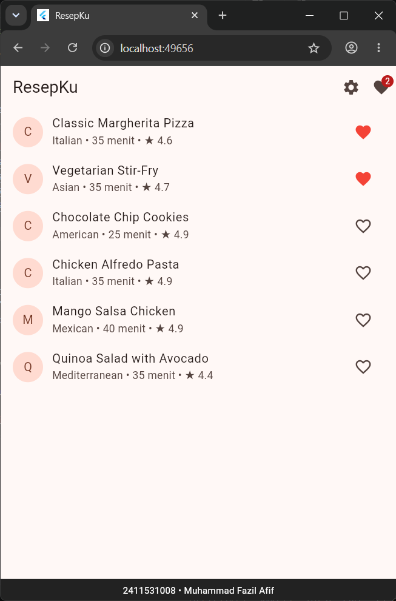
Foto resep dipakai di tiga tempat (list, grid, dan halaman detail), sehingga logika menampilkan foto dibuat sekali dalam widget RecipeImage pada lib/widgets/recipe_image.dart. Widget ini membungkus Image.network dan menyediakan loading state serta error state.
import 'package:flutter/material.dart';
/// Foto resep dari internet, lengkap dengan loading state dan error state.
class RecipeImage extends StatelessWidget {
const RecipeImage({super.key, required this.url, this.cacheWidth});
final String url;
/// Lebar (pixel) saat gambar di-decode. Gambar kecil cukup di-decode kecil,
/// sehingga memory yang dipakai jauh lebih sedikit.
final int? cacheWidth;
@override
Widget build(BuildContext context) {
return Image.network(
url,
fit: BoxFit.cover,
cacheWidth: cacheWidth,
// Loading state: tampil selama gambar masih diunduh.
loadingBuilder: (context, child, loadingProgress) {
if (loadingProgress == null) return child; // unduhan selesai
// Loading State
return ColoredBox(
color: Theme.of(context).colorScheme.surfaceContainerHighest,
child: const Center(child: Icon(Icons.restaurant_menu)),
);
},
// Error state: tampil jika URL salah atau tidak ada koneksi.
errorBuilder: (context, error, stackTrace) {
return Image.asset('assets/images/placeholder.png', fit: BoxFit.cover);
},
);
}
}BoxFit.cover — Foto mengisi seluruh kotak tanpa mengubah proporsi; bagian yang berlebih dipotong.loadingBuilder — Dipanggil berkali-kali selama foto diunduh. Jika loadingProgress bernilai null, unduhan sudah selesai dan foto (child) ditampilkan; jika belum, ditampilkan kotak abu-abu berikon sebagai penanda loading.errorBuilder — Dipanggil jika foto gagal dimuat, misalnya URL salah atau tidak ada koneksi. Pada kondisi ini ditampilkan placeholder.png dari asset.cacheWidth — Lebar dalam pixel saat foto di-decode. Foto asli dari server berukuran besar, sehingga thumbnail kecil cukup di-decode kecil agar hemat memory.Pada recipe_tile.dart, properti leading yang sebelumnya CircleAvatar diganti dengan foto berukuran 56 × 56. ClipRRect dengan borderRadius: BorderRadius.circular(8) membuat sudut foto membulat, SizedBox menentukan ukuran foto, dan RecipeImage menampilkan foto dengan cacheWidth: 168. Nilai 168 berasal dari ukuran tampil 56 dp dikalikan 3 (devicePixelRatio umum), sehingga foto tidak di-decode lebih besar dari kebutuhan dan memory tidak terbuang.
import 'package:flutter/material.dart';
import 'package:provider/provider.dart';
import 'package:resepku/models/recipe.dart';
import 'package:resepku/pages/detail_page.dart';
import 'package:resepku/providers/favorite_provider.dart';
import 'package:resepku/widgets/recipe_image.dart';
class RecipeTile extends StatelessWidget {
const RecipeTile({super.key, required this.recipe});
final Recipe recipe;
@override
Widget build(BuildContext context) {
// watch: widget ini ikut rebuild saat daftar favorit berubah
final isFavorite = context.watch<FavoriteProvider>().isFavorite(recipe);
return ListTile(
leading: ClipRRect(
borderRadius: BorderRadius.circular(8),
child: SizedBox(
width: 56,
height: 56,
// 56 dp x 3 (kepadatan layar umum) = 168 pixel
child: RecipeImage(url: recipe.image, cacheWidth: 168),
),
),
title: Text(recipe.name),
subtitle: Text(
'${recipe.cuisine} • ${recipe.totalTimeMinutes} menit • ★ ${recipe.rating}',
),
trailing: IconButton(
icon: Icon(
isFavorite ? Icons.favorite : Icons.favorite_border,
color: isFavorite ? Colors.red : null,
),
// read: di dalam callback cukup "membaca", tidak perlu listen
onPressed: () => context.read<FavoriteProvider>().toggle(recipe),
),
onTap: () => Navigator.push(
context,
MaterialPageRoute(builder: (context) => DetailPage(recipe: recipe)),
),
);
}
}Pada home_page.dart, body yang sebelumnya ListView(children: [...]) diganti dengan ListView.builder. Parameter itemCount diisi dummyRecipes.length untuk menentukan jumlah item, sedangkan itemBuilder dipanggil Flutter untuk setiap index dan mengembalikan RecipeTile sesuai data pada urutan tersebut. Item hanya dibuat ketika akan tampil di layar. Saat aplikasi pertama dibuka, kotak berikon yang muncul sebentar sebelum foto tampil adalah loading state.
body: ListView.builder(
itemCount: dummyRecipes.length,
itemBuilder: (context, index) {
return RecipeTile(recipe: dummyRecipes[index]);
},
),Untuk menguji error state, mode pesawat diaktifkan pada emulator, lalu aplikasi ditutup dan dibuka kembali. Foto yang gagal dimuat diganti gambar placeholder dan aplikasi tidak menampilkan error merah. Setelah pengujian, koneksi dikembalikan seperti semula.
Checkpoint 2: Home dengan thumbnail foto resep, dan Home ketika error state aktif (gambar placeholder tampil). Footer NIM dan nama terlihat pada setiap screenshot.
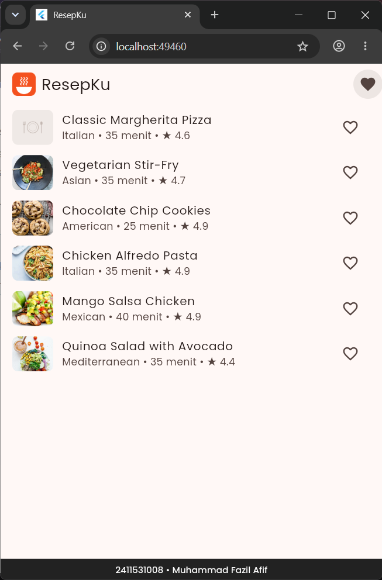
Kartu untuk tampilan grid dibuat pada file baru lib/widgets/recipe_grid_card.dart. Seperti RecipeTile, status favorit dibaca dari FavoriteProvider menggunakan context.watch dan diubah dengan context.read di dalam callback, sehingga fitur favorit dari Praktikum 6 tetap berfungsi di tampilan grid.
import 'package:flutter/material.dart';
import 'package:provider/provider.dart';
import 'package:resepku/models/recipe.dart';
import 'package:resepku/pages/detail_page.dart';
import 'package:resepku/providers/favorite_provider.dart';
import 'package:resepku/widgets/recipe_image.dart';
class RecipeGridCard extends StatelessWidget {
const RecipeGridCard({super.key, required this.recipe});
final Recipe recipe;
@override
Widget build(BuildContext context) {
final isFavorite = context.watch<FavoriteProvider>().isFavorite(recipe);
final textTheme = Theme.of(context).textTheme;
return Card(
clipBehavior: Clip.antiAlias, // gambar ikut terpotong sesuai sudut Card
child: InkWell(
onTap: () => Navigator.push(
context,
MaterialPageRoute(builder: (context) => DetailPage(recipe: recipe)),
),
child: Column(
crossAxisAlignment: CrossAxisAlignment.stretch,
children: [
Expanded(
child: Stack(
fit: StackFit.expand,
children: [
RecipeImage(url: recipe.image, cacheWidth: 500),
Positioned(
top: 4,
right: 4,
child: IconButton.filledTonal(
icon: Icon(
isFavorite ? Icons.favorite : Icons.favorite_border,
color: isFavorite ? Colors.red : null,
),
onPressed: () =>
context.read<FavoriteProvider>().toggle(recipe),
),
),
],
),
),
Padding(
padding: const EdgeInsets.all(8),
child: Column(
crossAxisAlignment: CrossAxisAlignment.start,
children: [
Text(
recipe.name,
maxLines: 1,
overflow: TextOverflow.ellipsis,
style: textTheme.titleSmall,
),
const SizedBox(height: 2),
Text(
'★ ${recipe.rating} • ${recipe.totalTimeMinutes} menit',
style: textTheme.bodySmall,
),
],
),
),
],
),
),
);
}
}clipBehavior: Clip.antiAlias — Memotong foto mengikuti sudut Card yang membulat.InkWell — Membuat seluruh kartu dapat di-tap dengan efek ripple untuk membuka halaman detail.Expanded dan Stack — Foto mengisi sisa tinggi kartu, dan tombol favorit diletakkan di atas foto.Positioned — Meletakkan tombol favorit di pojok kanan atas foto (top: 4, right: 4).maxLines: 1 dan TextOverflow.ellipsis — Nama resep yang terlalu panjang dipotong dengan tanda "..." agar kartu tidak overflow.cacheWidth: 500 — Foto grid lebih besar dari thumbnail list sehingga di-decode dengan lebar 500 pixel.HomePage diubah menjadi StatefulWidget karena memiliki state _isGrid yang menentukan tampilan aktif. State ini cukup memakai setState karena hanya HomePage yang membutuhkannya (ephemeral state). Pada actions ditambahkan IconButton yang membalik nilai _isGrid dan mengganti ikonnya antara Icons.grid_view dan Icons.view_list. Properti body memilih _buildGrid() atau _buildList() berdasarkan nilai _isGrid.
import 'package:flutter/material.dart';
import 'package:resepku/data/dummy_recipes.dart';
import 'package:resepku/pages/settings_page.dart';
import 'package:resepku/widgets/favorite_badge_button.dart';
import 'package:resepku/widgets/recipe_grid_card.dart';
import 'package:resepku/widgets/recipe_tile.dart';
class HomePage extends StatefulWidget {
const HomePage({super.key});
@override
State<HomePage> createState() => _HomePageState();
}
class _HomePageState extends State<HomePage> {
bool _isGrid = false; // ephemeral state: hanya HomePage yang membutuhkan
@override
Widget build(BuildContext context) {
return Scaffold(
appBar: AppBar(
title: Row(
children: [
Image.asset('assets/images/logo.png', height: 32),
const SizedBox(width: 8),
const Text('ResepKu'),
],
),
actions: [
IconButton(
tooltip: _isGrid ? 'Tampilan list' : 'Tampilan grid',
icon: Icon(_isGrid ? Icons.view_list : Icons.grid_view),
onPressed: () => setState(() => _isGrid = !_isGrid),
),
const FavoriteBadgeButton(),
IconButton(
tooltip: 'Pengaturan',
icon: const Icon(Icons.settings_outlined),
onPressed: () => Navigator.push(
context,
MaterialPageRoute(builder: (context) => const SettingsPage()),
),
),
],
),
body: _isGrid ? _buildGrid() : _buildList(),
);
}
Widget _buildList() {
return ListView.builder(
itemCount: dummyRecipes.length,
itemBuilder: (context, index) {
return RecipeTile(recipe: dummyRecipes[index]);
},
);
}
Widget _buildGrid() {
return GridView.builder(
padding: const EdgeInsets.all(8),
gridDelegate: const SliverGridDelegateWithFixedCrossAxisCount(
crossAxisCount: 2,
mainAxisSpacing: 8,
crossAxisSpacing: 8,
childAspectRatio: 3 / 4, // lebar : tinggi
),
itemCount: dummyRecipes.length,
itemBuilder: (context, index) {
return RecipeGridCard(recipe: dummyRecipes[index]);
},
);
}
}_isGrid — Menentukan tampilan yang aktif, bernilai awal false (list).tooltip — Teks bantuan saat tombol ditekan lama, sekaligus memudahkan pengujian.crossAxisCount: 2 — Grid selalu terdiri dari dua kolom.mainAxisSpacing dan crossAxisSpacing — Jarak vertikal dan horizontal antar kartu sebesar 8 dp.childAspectRatio: 3 / 4 — Perbandingan lebar : tinggi kartu, sehingga kartu lebih tinggi daripada lebarnya agar foto dan teks muat.Pada detail_page.dart ditambahkan import recipe_image.dart, lalu foto diletakkan sebagai child pertama pada ListView. AspectRatio dengan aspectRatio: 16 / 9 menjaga proporsi foto, ClipRRect membuat sudutnya membulat, dan RecipeImage dipakai ulang tanpa cacheWidth karena foto tampil hampir selebar layar.
import 'package:resepku/widgets/recipe_image.dart';
// ...
children: [
ClipRRect(
borderRadius: BorderRadius.circular(16),
child: AspectRatio(
aspectRatio: 16 / 9,
child: RecipeImage(url: recipe.image),
),
),
const SizedBox(height: 16),
// ... isi halaman detail yang sebelumnya
],Setelah aplikasi dihentikan dan dijalankan kembali, dilakukan pengujian menggunakan enam skenario pada Langkah D.2. Footer NIM dan nama terlihat pada setiap screenshot.
Screenshot Home dalam mode grid dengan minimal satu resep favorit, dan halaman Detail dengan foto besar.
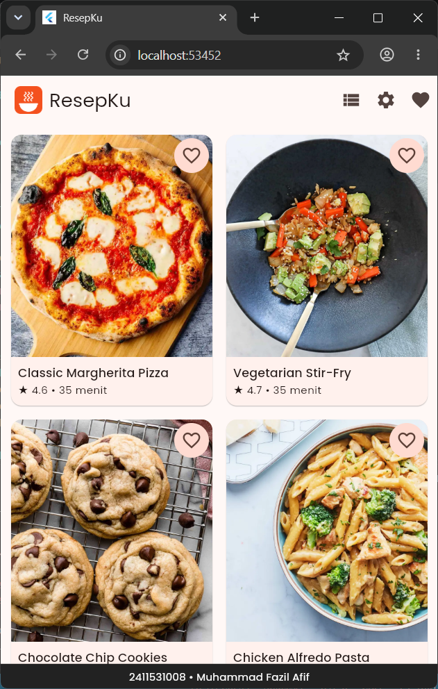
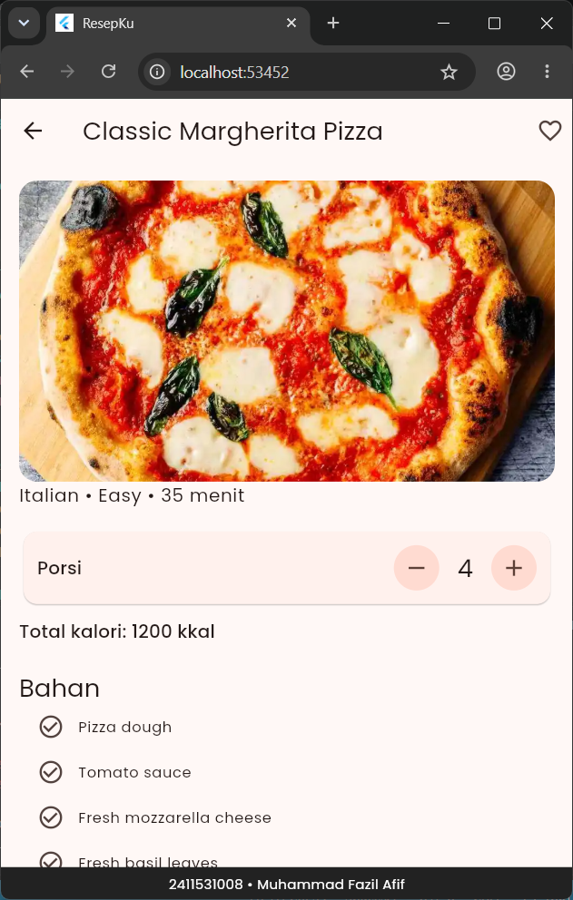
| No | Skenario | Hasil yang Diharapkan | Sesuai? |
|---|---|---|---|
| 1 | Buka aplikasi | Logo di AppBar, font Poppins, thumbnail foto di setiap resep | ✓ |
| 2 | Tekan tombol grid di AppBar | Resep tampil sebagai kartu dua kolom; ikon tombol berubah menjadi ikon list | ✓ |
| 3 | Di mode grid, tap ikon hati pada Margherita | Ikon merah dan badge bertambah | ✓ |
| 4 | Kembali ke mode list | Ikon hati Margherita tetap merah | ✓ |
| 5 | Tap kartu Alfredo di mode grid | Halaman detail terbuka dengan foto besar di atas | ✓ |
| 6 | Aktifkan mode pesawat, tutup dan buka aplikasi | Gambar placeholder tampil tanpa error merah | ✓ |
Perhitungan ukuran setiap kartu grid pada HP dengan lebar layar 360 dp, berdasarkan pengaturan GridView.builder pada HomePage: padding: EdgeInsets.all(8), crossAxisCount: 2, crossAxisSpacing: 8, dan childAspectRatio: 3 / 4.
Rumus lebar kartu pada grid dengan n kolom adalah (lebar layar − padding kiri − padding kanan − (n − 1) × crossAxisSpacing) / n, sedangkan tinggi kartu adalah lebar kartu / childAspectRatio.
Lebar kartu 168 dp pada layar dengan devicePixelRatio 3× setara sekitar 504 pixel, sehingga nilai cacheWidth: 500 pada RecipeGridCard sudah sesuai dengan kebutuhan tampilan.
| Yang Dihitung | Hasil |
|---|---|
| Lebar kartu (dp) | 168 dp |
| Tinggi kartu (dp) | 224 dp |
Status favorit tidak disimpan di dalam RecipeGridCard maupun RecipeTile, melainkan di FavoriteProvider sebagai state global yang dipasang di atas MaterialApp (Praktikum 6). Kedua widget membaca data yang sama dengan context.watch<FavoriteProvider>().isFavorite(recipe) dan mengubahnya melalui toggle() yang memanggil notifyListeners(). Ketika tampilan berganti, hanya state lokal _isGrid pada HomePage yang berubah, sehingga widget tile atau kartu lama dibuang dan yang baru dibuat. Karena datanya berada di luar widget tersebut, status favorit tidak ikut hilang. Hal ini berbeda dengan eksperimen state lokal pada Praktikum 6, di mana status _isFavorite akan hilang bersama widgetnya.
if (loadingProgress == null) return child; DihapusYang tampil hanya kotak abu-abu berikon restaurant_menu (tampilan loading) untuk selamanya, dan foto tidak pernah muncul walaupun sudah selesai diunduh. Penyebabnya, loadingBuilder tetap dipanggil ketika unduhan selesai dengan loadingProgress bernilai null, dan baris tersebutlah yang meneruskan foto (child) ke layar. Tanpa baris itu, kode selalu berlanjut ke return ColoredBox(...) sehingga child yang berisi foto tidak pernah dikembalikan.
Foto asli berukuran 1200 × 800 pixel, sehingga tanpa cacheWidth foto di-decode penuh sebanyak 1200 × 800 = 960.000 pixel. Dengan cacheWidth: 168, lebar menjadi 168 pixel dan tinggi mengikuti proporsi, yaitu 800/1200 × 168 = 112 pixel, sehingga yang di-decode hanya 168 × 112 = 18.816 pixel (sekitar 51 kali lebih sedikit). Dengan asumsi 4 byte per pixel (RGBA), satu foto memakai sekitar 3,84 MB tanpa cacheWidth dan sekitar 75 KB dengan cacheWidth. Ketika data menjadi 50 resep pada Modul 8, foto yang di-decode penuh dapat menghabiskan sekitar 192 MB (50 × 3,84 MB) dibanding sekitar 3,8 MB dengan cacheWidth. Tanpa cacheWidth, aplikasi berisiko boros memory, scroll tersendat, bahkan ditutup paksa oleh sistem karena kehabisan memory.
Logo adalah identitas aplikasi yang tetap dan selalu dibutuhkan, sehingga sebaiknya ikut ter-bundle sebagai asset agar langsung tampil tanpa koneksi dan tanpa loading state. Jika diambil dari internet, logo akan terlambat muncul atau bahkan hilang ketika tidak ada koneksi, serta bergantung pada server luar. Sebaliknya, foto resep tidak dimasukkan ke asset karena jumlah dan isinya dinamis (pada Modul 8 diambil dari API dan dapat bertambah). Memasukkan semua foto ke asset akan membuat ukuran aplikasi (APK) membengkak, dan setiap penambahan resep baru mengharuskan aplikasi diperbarui ulang.
Latihan ini menambahkan deretan ChoiceChip di bawah AppBar Home yang dapat digeser ke samping, berisi "Semua" ditambah setiap cuisine yang ada di data. Memilih sebuah chip hanya menampilkan resep dengan cuisine tersebut, baik di mode list maupun grid.
Pada _HomePageState ditambahkan state String? _cuisine yang menyimpan cuisine terpilih, di mana nilai null berarti semua cuisine. Daftar cuisine diambil dari data menggunakan dummyRecipes.map((r) => r.cuisine).toSet().toList(): map mengambil cuisine dari setiap resep, toSet() menghilangkan duplikat, dan toList() mengubahnya kembali menjadi list. Variabel recipes berisi data yang sudah difilter menggunakan where sehingga dapat dipakai oleh tampilan list maupun grid.
import 'package:resepku/models/recipe.dart';
class _HomePageState extends State<HomePage> {
bool _isGrid = false;
String? _cuisine; // null = semua cuisine
@override
Widget build(BuildContext context) {
// Daftar cuisine diambil dari data, bukan ditulis manual
final cuisines = dummyRecipes.map((r) => r.cuisine).toSet().toList();
// Data yang sudah difilter, dipakai oleh tampilan list maupun grid
final recipes = _cuisine == null
? dummyRecipes
: dummyRecipes.where((r) => r.cuisine == _cuisine).toList();
return Scaffold(
appBar: AppBar(
// ... tidak berubah
),
body: Column(
// ... lihat langkah B
),
);
}
}body diubah menjadi Column. Deretan chip dibungkus SizedBox(height: 56) berisi ListView horizontal, karena ListView horizontal di dalam Column wajib diberi tinggi. Chip "Semua" bernilai terpilih ketika _cuisine == null, sedangkan chip setiap cuisine dibuat dengan perulangan for dan menyimpan cuisine-nya ke _cuisine di dalam setState saat dipilih. List atau grid dibungkus Expanded agar mengisi sisa layar. Method _buildList dan _buildGrid kini menerima parameter List<Recipe> recipes sehingga yang ditampilkan adalah data hasil filter.
body: Column(
children: [
SizedBox(
height: 56, // ListView horizontal di dalam Column wajib diberi tinggi
child: ListView(
scrollDirection: Axis.horizontal,
padding: const EdgeInsets.symmetric(horizontal: 8, vertical: 8),
children: [
Padding(
padding: const EdgeInsets.only(right: 8),
child: ChoiceChip(
label: const Text('Semua'),
selected: _cuisine == null,
onSelected: (_) => setState(() => _cuisine = null),
),
),
for (final cuisine in cuisines)
Padding(
padding: const EdgeInsets.only(right: 8),
child: ChoiceChip(
label: Text(cuisine),
selected: _cuisine == cuisine,
onSelected: (_) => setState(() => _cuisine = cuisine),
),
),
],
),
),
// List atau grid mengisi sisa layar
Expanded(
child: _isGrid ? _buildGrid(recipes) : _buildList(recipes),
),
],
),
// ...
Widget _buildList(List<Recipe> recipes) {
return ListView.builder(
itemCount: recipes.length,
itemBuilder: (context, index) {
return RecipeTile(recipe: recipes[index]);
},
);
}
Widget _buildGrid(List<Recipe> recipes) {
return GridView.builder(
padding: const EdgeInsets.all(8),
gridDelegate: const SliverGridDelegateWithFixedCrossAxisCount(
crossAxisCount: 2,
mainAxisSpacing: 8,
crossAxisSpacing: 8,
childAspectRatio: 3 / 4,
),
itemCount: recipes.length,
itemBuilder: (context, index) {
return RecipeGridCard(recipe: recipes[index]);
},
);
}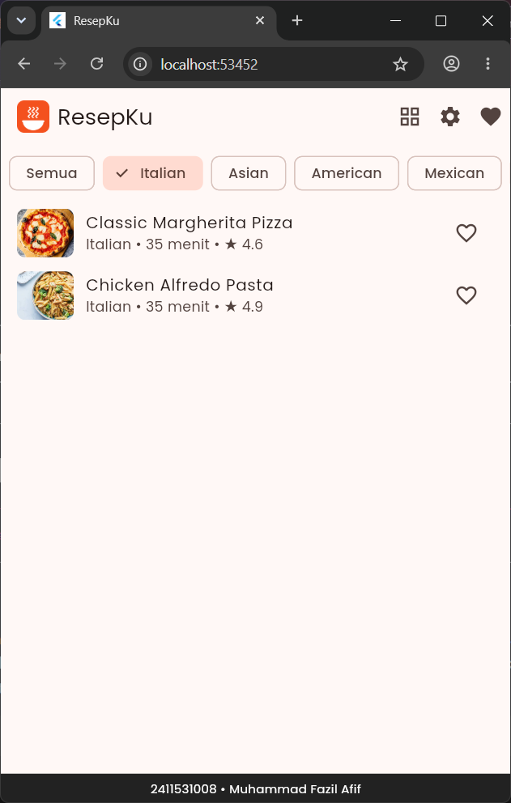
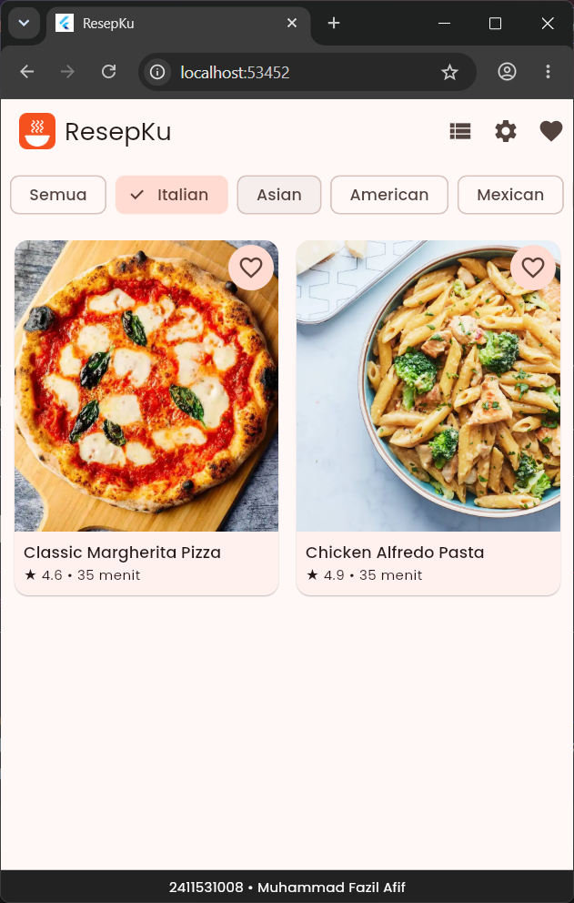
Latihan ini mengubah halaman Favorit agar memakai ListView.separated dengan Divider, menampilkan thumbnail foto memakai RecipeImage, serta memungkinkan item digeser ke kiri untuk dihapus dari favorit (Dismissible) disertai SnackBar berisi nama resep yang dihapus.
Pada Consumer<FavoriteProvider>, ListView(children: [...]) diganti dengan ListView.separated. Parameter separatorBuilder mengembalikan Divider(height: 1) sebagai garis pemisah di antara item, sedangkan itemBuilder membangun setiap baris dari daftar favorite.items. Pada leading ditambahkan RecipeImage berukuran 56 × 56 dengan sudut membulat, sama seperti thumbnail pada daftar resep di Home.
import 'package:resepku/widgets/recipe_image.dart';
// ... di dalam Consumer<FavoriteProvider>, setelah pengecekan daftar kosong
final items = favorite.items;
return ListView.separated(
itemCount: items.length,
separatorBuilder: (context, index) => const Divider(height: 1),
itemBuilder: (context, index) {
final recipe = items[index];
return ListTile(
leading: ClipRRect(
borderRadius: BorderRadius.circular(8),
child: SizedBox(
width: 56,
height: 56,
child: RecipeImage(url: recipe.image, cacheWidth: 168),
),
),
title: Text(recipe.name),
subtitle: Text(recipe.cuisine),
);
},
);Setiap ListTile dibungkus Dismissible agar dapat digeser. Parameter key diisi ValueKey(recipe.id), bukan index, karena key harus unik dan stabil; jika memakai index, posisi item bergeser setiap ada yang dihapus sehingga Flutter dapat salah mengenali item. Properti direction: DismissDirection.endToStart membatasi geseran hanya ke kiri, dan background menampilkan latar merah berikon hapus di belakang item saat digeser. Pada onDismissed, resep dihapus dari favorit melalui favorite.toggle(recipe), lalu ScaffoldMessenger.of(context).showSnackBar menampilkan nama resep yang dihapus. Tombol "Hapus semua" dari Praktikum 6 pada AppBar tetap dipertahankan tanpa perubahan.
itemBuilder: (context, index) {
final recipe = items[index];
return Dismissible(
key: ValueKey(recipe.id), // unik dan stabil, bukan index
direction: DismissDirection.endToStart, // hanya geser ke kiri
background: Container(
color: Colors.red,
alignment: Alignment.centerRight,
padding: const EdgeInsets.only(right: 16),
child: const Icon(Icons.delete, color: Colors.white),
),
onDismissed: (direction) {
favorite.toggle(recipe);
ScaffoldMessenger.of(context).showSnackBar(
SnackBar(content: Text('${recipe.name} dihapus dari favorit')),
);
},
child: ListTile(
leading: ClipRRect(
borderRadius: BorderRadius.circular(8),
child: SizedBox(
width: 56,
height: 56,
child: RecipeImage(url: recipe.image, cacheWidth: 168),
),
),
title: Text(recipe.name),
subtitle: Text(recipe.cuisine),
),
);
},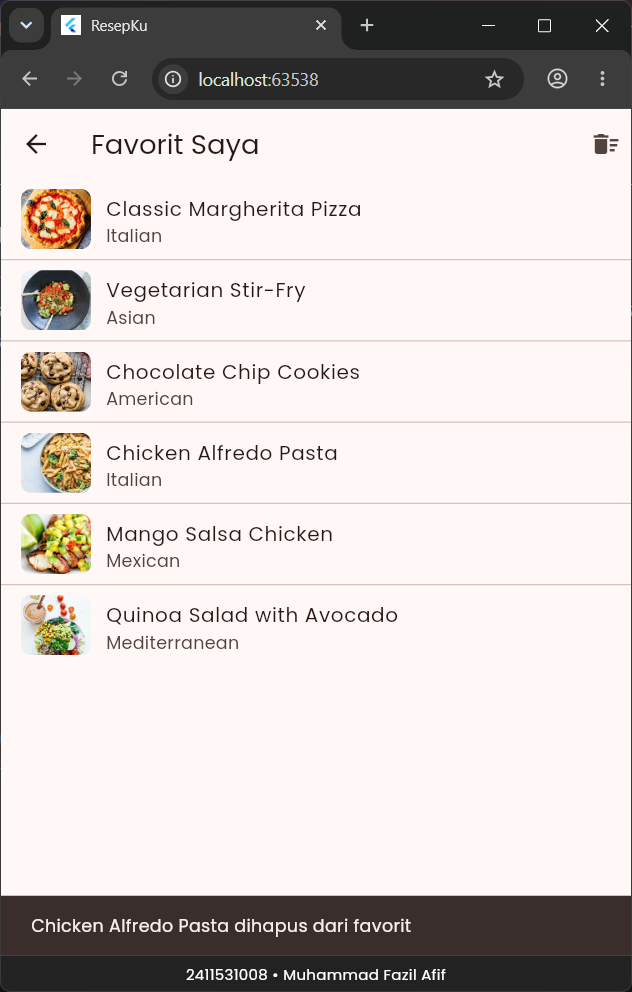
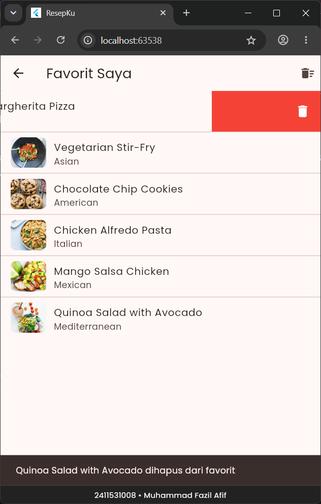
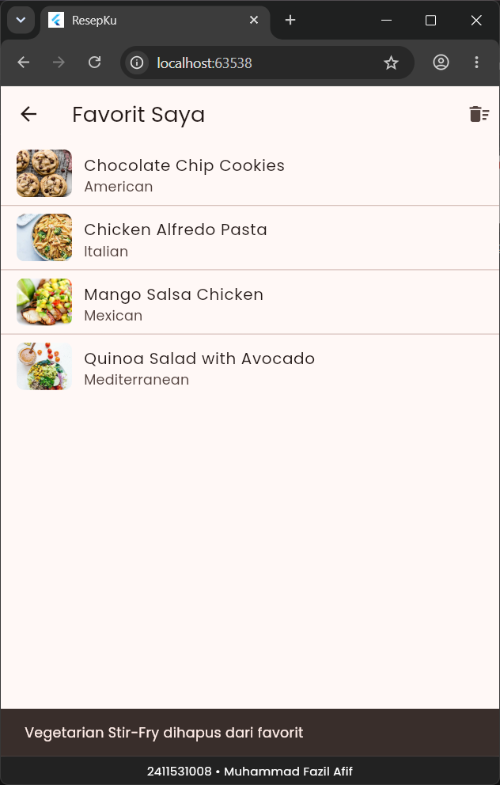
Latihan bonus ini mengubah halaman detail menjadi CustomScrollView dengan SliverAppBar yang menampilkan foto resep sebagai latar dan mengecil ketika halaman di-scroll.
Package cached_network_image dipasang dengan flutter pub add cached_network_image agar foto tersimpan di disk dan tidak diunduh ulang ketika aplikasi dibuka kembali. Scaffold kini hanya berisi body: CustomScrollView dengan daftar slivers. Pada SliverAppBar, pinned: true membuat AppBar tetap menempel di atas ketika foto mengecil, dan expandedHeight: 260 menentukan tinggi awal ketika foto masih penuh. Foto ditempatkan pada background milik FlexibleSpaceBar menggunakan CachedNetworkImage, dengan placeholder sebagai loading state dan errorWidget yang menampilkan placeholder.png sebagai error state. Judul resep dan tombol favorit dipindahkan ke FlexibleSpaceBar dan actions.
// Terminal: flutter pub add cached_network_image
import 'package:cached_network_image/cached_network_image.dart';
// ...
return Scaffold(
body: CustomScrollView(
slivers: [
SliverAppBar(
pinned: true, // AppBar tetap tampil saat foto mengecil
expandedHeight: 260,
actions: [
IconButton(
icon: Icon(isFavorite ? Icons.favorite : Icons.favorite_border),
onPressed: () => context.read<FavoriteProvider>().toggle(recipe),
),
],
flexibleSpace: FlexibleSpaceBar(
title: Text(recipe.name),
background: CachedNetworkImage(
imageUrl: recipe.image,
fit: BoxFit.cover,
placeholder: (context, url) => ColoredBox(
color: Theme.of(context).colorScheme.surfaceContainerHighest,
child: const Center(child: Icon(Icons.restaurant_menu)),
),
errorWidget: (context, url, error) =>
Image.asset('assets/images/placeholder.png', fit: BoxFit.cover),
),
),
),
// ... lihat langkah B
],
),
);Widget biasa tidak dapat langsung ditempatkan di dalam slivers, sehingga bagian jenis masakan, porsi, total kalori, dan judul "Bahan" dibungkus SliverToBoxAdapter yang mengubah widget biasa menjadi sliver. Daftar bahan memakai SliverList.builder, versi lazy dari daftar di dalam CustomScrollView, di mana itemCount diisi recipe.ingredients.length dan itemBuilder mengembalikan ListTile untuk setiap bahan. State lokal _servings dan fitur favorit tetap berfungsi seperti sebelumnya.
slivers: [
// ... SliverAppBar
SliverToBoxAdapter(
child: Padding(
padding: const EdgeInsets.all(16),
child: Column(
crossAxisAlignment: CrossAxisAlignment.start,
children: [
Text(
'${recipe.cuisine} • ${recipe.difficulty} • ${recipe.totalTimeMinutes} menit',
style: textTheme.bodyLarge,
),
const SizedBox(height: 16),
Card(
child: Padding(
padding: const EdgeInsets.all(12),
child: Row(
children: [
Text('Porsi', style: textTheme.titleMedium),
const Spacer(),
IconButton.filledTonal(
onPressed: _servings > 1 ? _removeServing : null,
icon: const Icon(Icons.remove),
),
Padding(
padding: const EdgeInsets.symmetric(horizontal: 16),
child: Text('$_servings', style: textTheme.titleLarge),
),
IconButton.filledTonal(
onPressed: _addServing,
icon: const Icon(Icons.add),
),
],
),
),
),
const SizedBox(height: 8),
Text('Total kalori: $totalCalories kkal', style: textTheme.titleMedium),
const SizedBox(height: 24),
Text('Bahan', style: textTheme.titleLarge),
],
),
),
),
SliverList.builder(
itemCount: recipe.ingredients.length,
itemBuilder: (context, index) {
return ListTile(
dense: true,
leading: const Icon(Icons.check_circle_outline),
title: Text(recipe.ingredients[index]),
);
},
),
],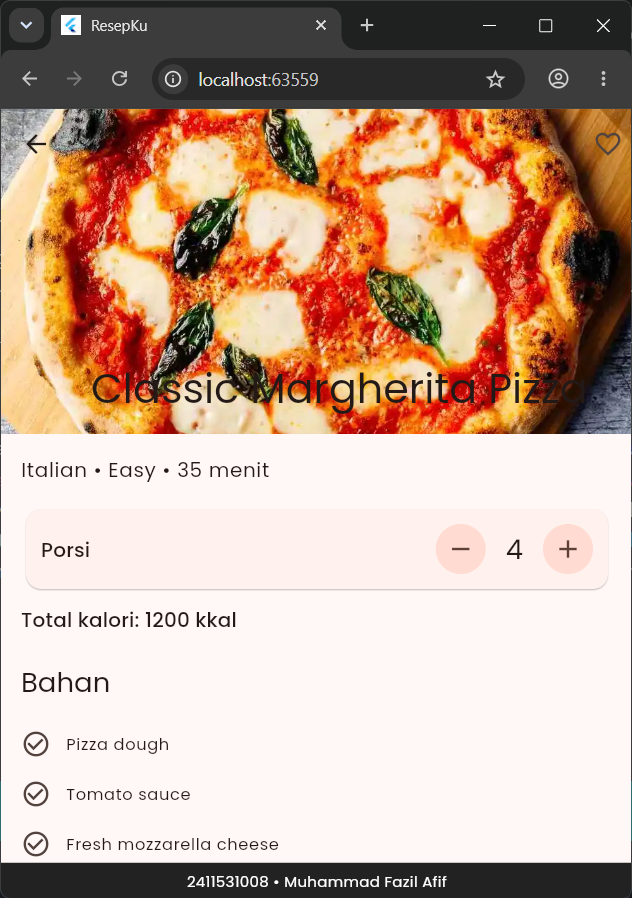
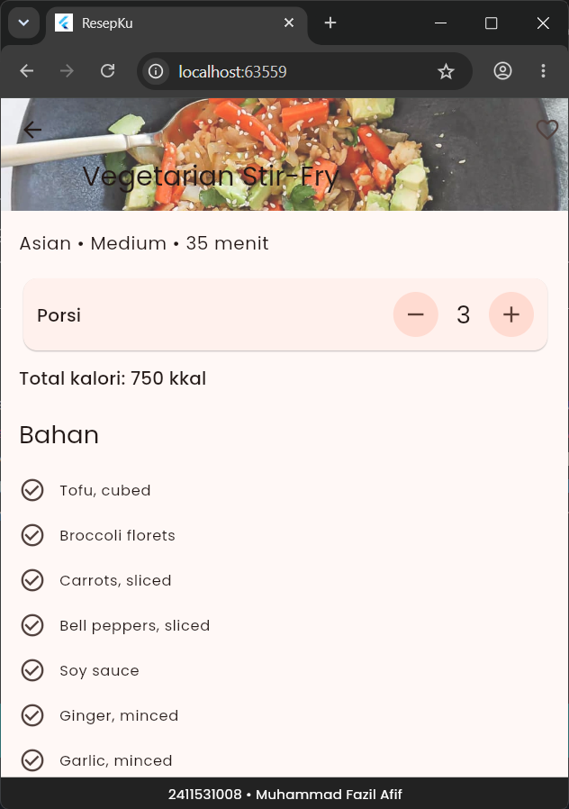
Berdasarkan praktikum yang telah dilakukan, dapat disimpulkan bahwa asset gambar dan font harus didaftarkan di pubspec.yaml sebelum digunakan melalui Image.asset dan fontFamily, sedangkan gambar dari internet ditampilkan dengan Image.network yang wajib dilengkapi loading state dan error state serta cacheWidth agar hemat memory.
ListView.builder dan GridView.builder menampilkan data secara lazy sehingga efisien, dan ukuran kartu pada grid dapat dihitung dari lebar layar, padding, jarak antar kolom, dan childAspectRatio.
Pemisahan jenis state juga terbukti tepat: tampilan list atau grid cukup memakai setState karena hanya dibutuhkan satu halaman, sedangkan status favorit di Provider tetap konsisten di semua tampilan.
Dengan memahami konsep ini, mahasiswa dapat membangun tampilan daftar berfoto yang responsif dan tetap berfungsi ketika koneksi internet terputus.